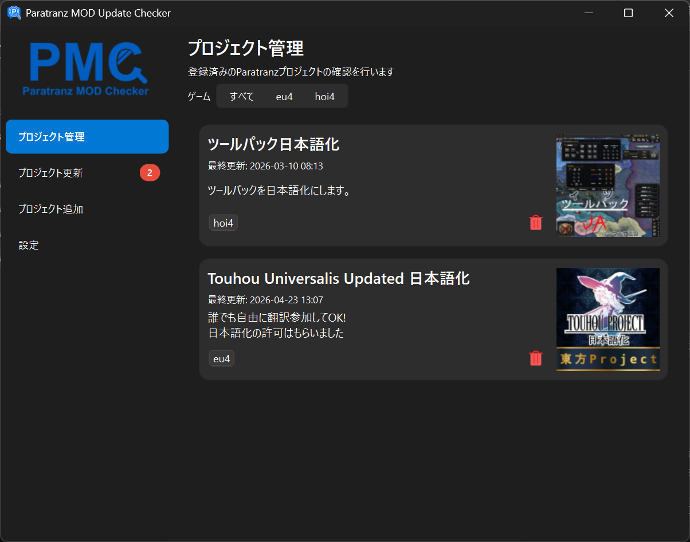
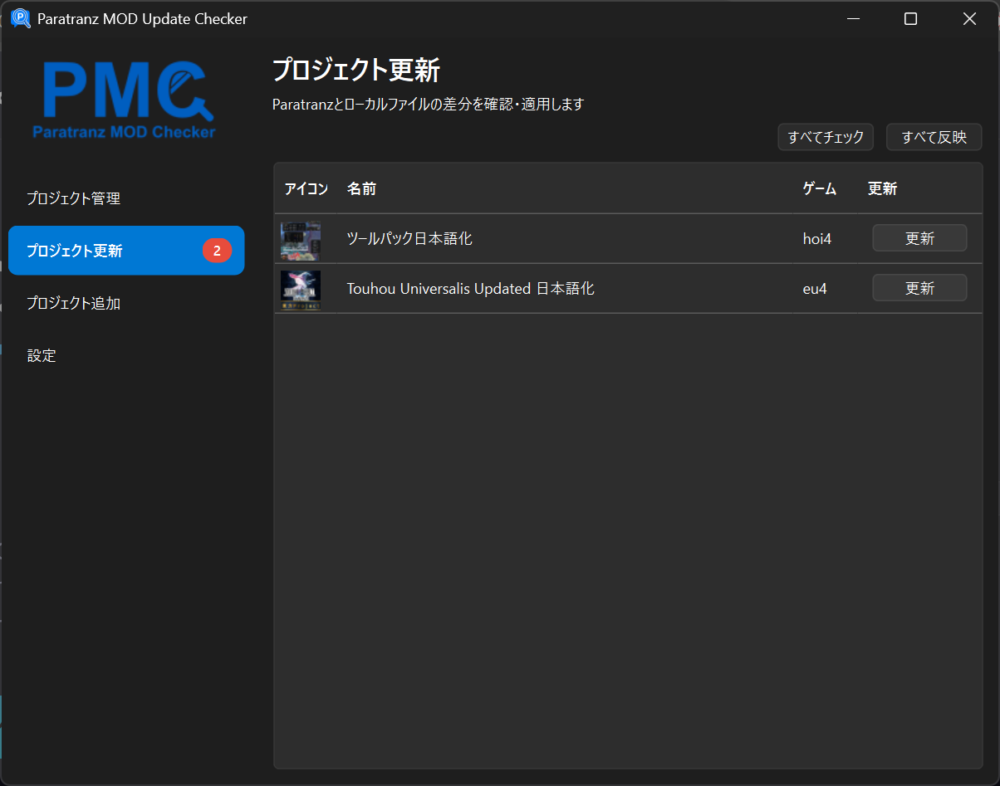
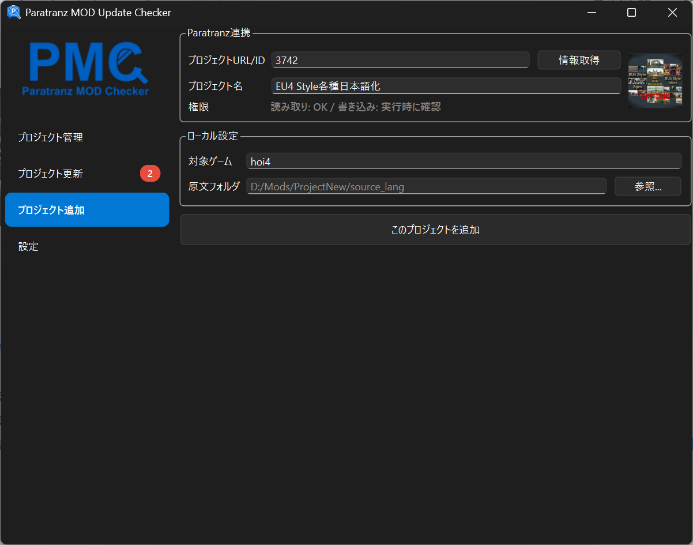
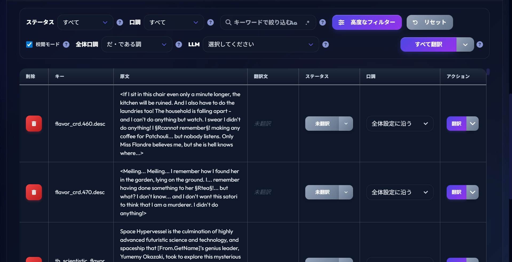

翻訳Modの原文更新を、
一瞬でParatranzへ。
Paratranz Mod Checkerは、翻訳Mod作成者のための同期管理ツールです。ローカルのModファイルで行った原文の変更を、ボタン一つでParatranz上のデータへダイレクトに反映します。

ボタン一つで同期
ゲームのアップデート等に伴う原文の変更を、手動でParatranzに反映させる手間はもう不要です。ボタンをクリックするだけで、ローカルの最新原文をParatranzへ同期し、翻訳作業をすぐに開始できます。

主な機能
ボタン一つで同期
ローカルで行った原文の変更をボタン一つでParatranz上のファイルと同期。変更箇所のみを賢く検知して反映します。
複数プロジェクト管理
数多くのModプロジェクトを一つの画面で並行管理。プロジェクトごとのステータスも一目で把握。
自動チェック
バックグラウンドで常に更新を監視。変更があればシステムトレイから即座にお知らせします。
ゲーム別フィルタ
ゲームタイトルごとにプロジェクトを整理。大量のModがあっても迷うことはありません。

スムーズなプロジェクト管理
ParatranzのURLを入力するだけで簡単にプロジェクトを追加可能。複数のゲームModを効率的に整理し、必要なプロジェクトにいつでも素早くアクセスできます。
今すぐ始めましょう
Paratranz Mod Checkerは、翻訳Mod作成者のワークフローをよりスマートに、より快適にします。

Developed by Ikumyon
AI自動翻訳サイト

Paratranz Mod Checkerと同じ開発者による、ファイルを直接翻訳可能なAIツールです。YAML, JSON, TXTなどのファイルをドラッグ＆ドロップするだけで、最新のAIが文脈を汲み取った翻訳を行います。
- 複数の最新AI（GPT-4o, Claude 3.5, Gemini等）に対応
- 口調・キャラクター設定のカスタマイズ
- 用語集による固有名詞の固定機能
- 正規表現による制御文字の保護